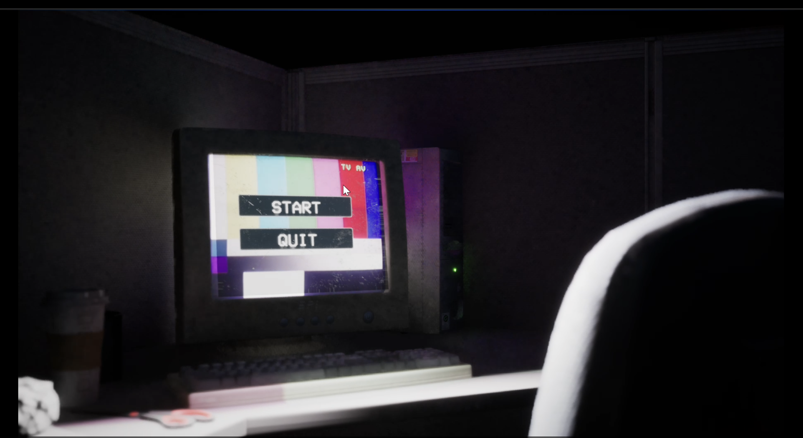
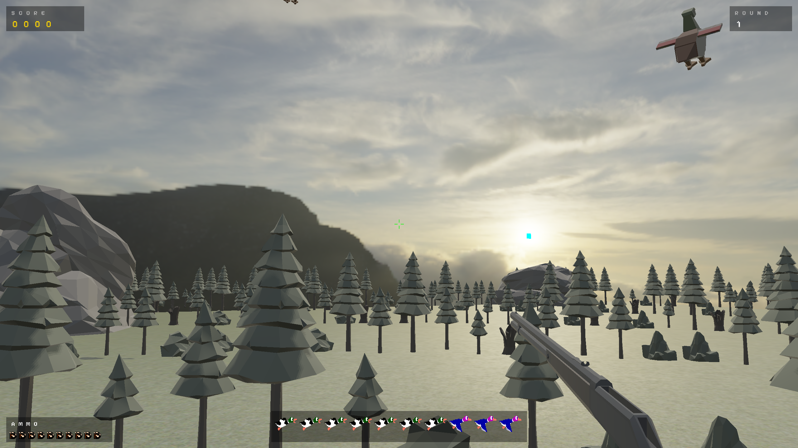
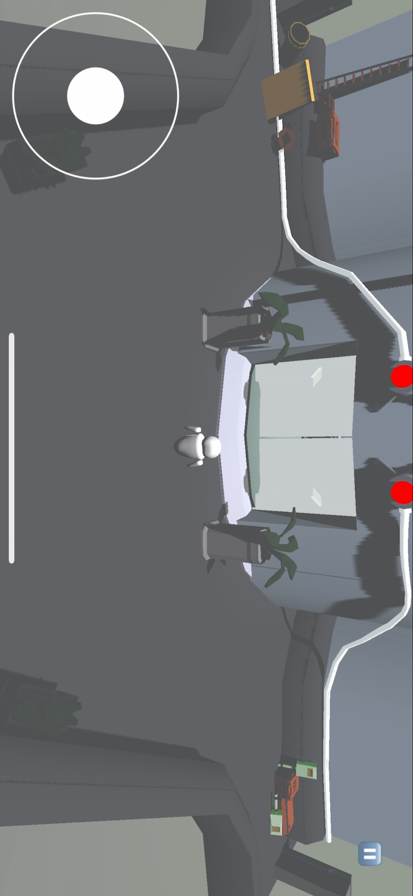
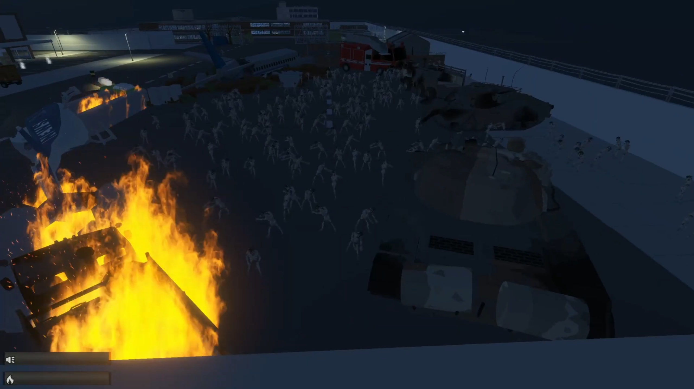
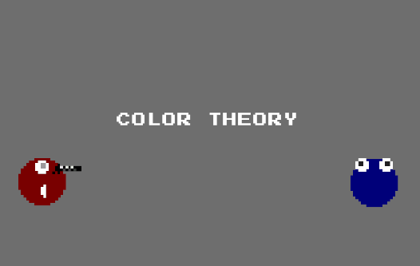
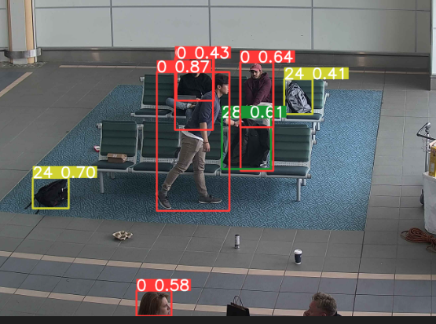
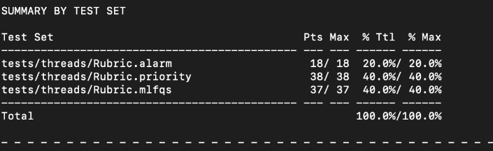
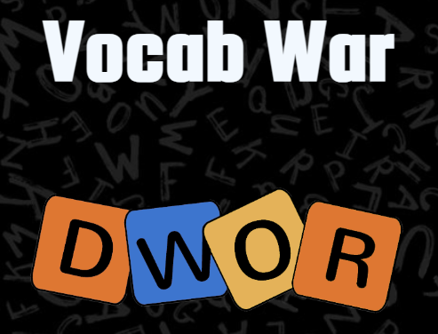
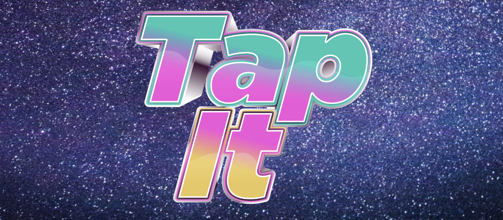

I was a graphics programmer based in Vancouver. I care about what happens between the CPU submitting a draw call and a pixel appearing on screen, the pipeline, the math, the tradeoffs. That's the part that pulls me in.
From 2024 to 2026 I was at Huawei Technologies Canada building tooling to automatically optimize shaders in production mobile games. The platform combined a custom GLSL parser, a GNN for algorithm detection, and an LLM-driven pipeline to find and apply optimizations, delivering a 5.5% GPU performance gain at 0.999 SSIM, shipped into Honkai: Star Rail. I also cut the manual performance testing process from 30 minutes to 9 per capture.
Outside work I've been building Going Down solo in UE5 for about 8 months, a psychological horror puzzle game where shadows kill you and the only safe thing is light. Six puzzle systems, a chase sequence, cutscenes, a full narrative pipeline. It's the most sustained thing I've built on my own and I'm not done yet.
I also built a 3D engine from scratch with a team: deferred PBR, Cook-Torrance BRDF, IBL, full ECS and shipped Duck Hunt in it as a demo. The generative flower system running behind this site (Peonia) is another solo project: 11 procedural species, fake 3D projection, diffuse/specular/rim lighting, nine render modes.








